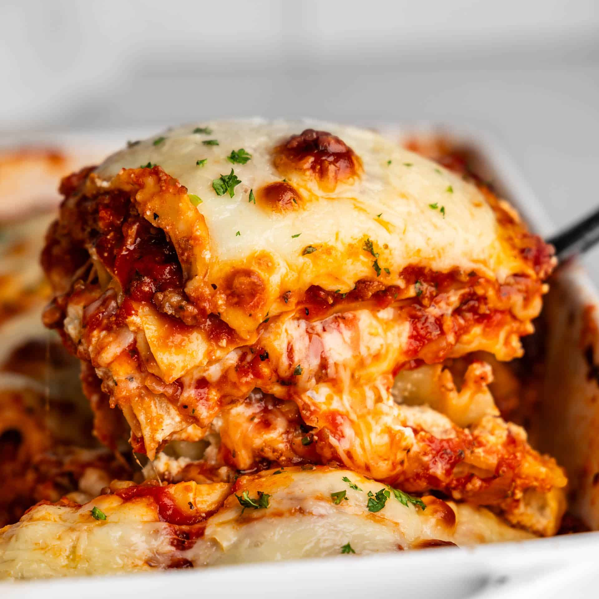

Lasagna

Description
Lasagna is a classic Italian dish featuring wide, flat pasta sheets layered with a rich combination of ingredients such as savory ragù (ground meats in tomato sauce), creamy béchamel sauce, vegetables, and a variety of cheeses including ricotta, mozzarella, and Parmesan. These layers are stacked and baked until bubbly and golden, resulting in a hearty, comforting meal with a harmonious blend of textures and flavors. Typically, the baked lasagna is cut into square or rectangular portions for serving, making it a beloved dish for family gatherings and celebrations.
Ingredients
- Lasagna noodles (wide, flat sheets)
- Ground meats (such as sweet Italian sausage and lean ground beef)
- Onion, minced
- Garlic cloves, crushed or minced
- Crushed tomatoes (canned)
- Tomato sauce and tomato paste
- Water or chicken broth
- Ricotta cheese
- Mozzarella cheese (sliced and shredded)
- Parmesan cheese, grated
- Egg (for cheese mixture)
- Fresh parsley, chopped
- Dried basil leaves
- Italian seasoning
- Fennel seeds (optional)
- Salt and black pepper
- Olive oil
- Optional: béchamel sauce or vegetables for layering
Steps
- Prepare the Meat Sauce: Cook ground sausage, beef, onion, and garlic in a pan over medium heat until browned. Add crushed tomatoes, tomato sauce, tomato paste, water or broth, and season with sugar, parsley, basil, salt, Italian seasoning, fennel seeds, and pepper. Simmer covered for about 1.5 hours, stirring occasionally.
- Cook the Noodles: Boil lasagna noodles in salted water until al dente (about 8-10 minutes), then drain and rinse with cold water to prevent sticking.
- Make the Cheese Mixture: In a bowl, combine ricotta cheese with egg, parsley, salt, and sometimes Parmesan cheese. Mix well to create a creamy filling.
- Assemble the Lasagna: Preheat oven to 375°F (190°C). Spread a layer of meat sauce at the bottom of a baking dish. Lay down noodles overlapping slightly. Spread half the ricotta mixture over noodles, add a layer of mozzarella slices, then spoon more meat sauce on top and sprinkle Parmesan. Repeat layering (noodles, ricotta, mozzarella, sauce, Parmesan) until ingredients are used, finishing with a top layer of noodles, sauce, and shredded mozzarella and Parmesan cheese.
- Bake: Cover the dish with foil and bake for about 30-40 minutes. Remove foil and bake an additional 10-15 minutes until the cheese is browned and bubbly. Let rest for 15 minutes before serving to set the layers.
Home